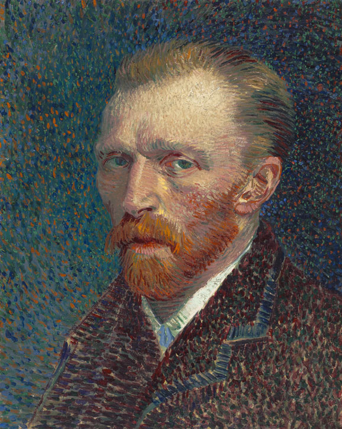

Vincent Van Gogh

Step into a world where strokes of brilliance dance upon canvases, where
vibrant hues ignite the imagination, and where the soul of an artist
echoes through the ages. Welcome to an immersive journey through the
life and legacy of one of history's most enigmatic creators – Vincent
van Gogh.
In the hallowed halls of our digital gallery, we invite you to wander
through the landscapes of his mind, tracing the brushstrokes that
captured the essence of emotion and the whispers of a tormented genius.
Here, amidst sunflower fields ablaze with golden radiance and starry
nights that twinkle with celestial wonder, you'll discover the profound
beauty that defined Van Gogh's artistry.
As you navigate through the corridors of his existence, each click
unveils a new layer of insight into the man behind the masterpieces –
from the tumultuous swirls of his inner turmoil to the tender moments of
serenity he sought amidst chaos. Through captivating narratives, rare
photographs, and intimate glimpses into his personal correspondence, we
strive to paint a comprehensive portrait of Van Gogh, the visionary
whose brilliance transcends time.
Join us on this odyssey of discovery, where every stroke tells a story,
every color whispers a secret, and every moment spent in the presence of
Van Gogh's artistry is an homage to the enduring power of creativity.
Welcome to a sanctuary where the spirit of Vincent van Gogh lives on,
inviting you to immerse yourself in the boundless beauty of his world.